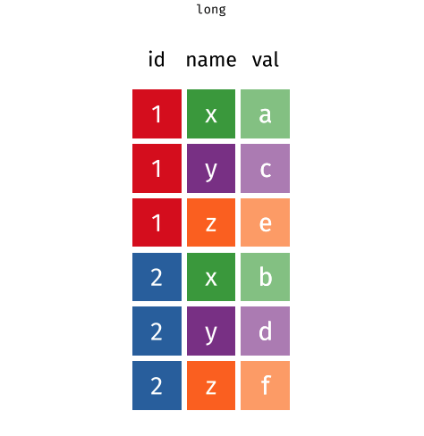
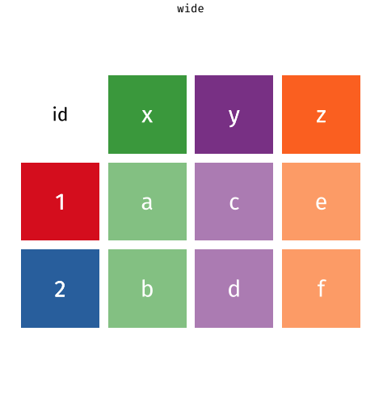
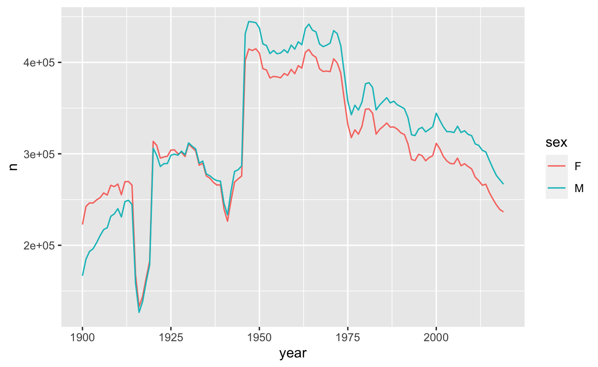
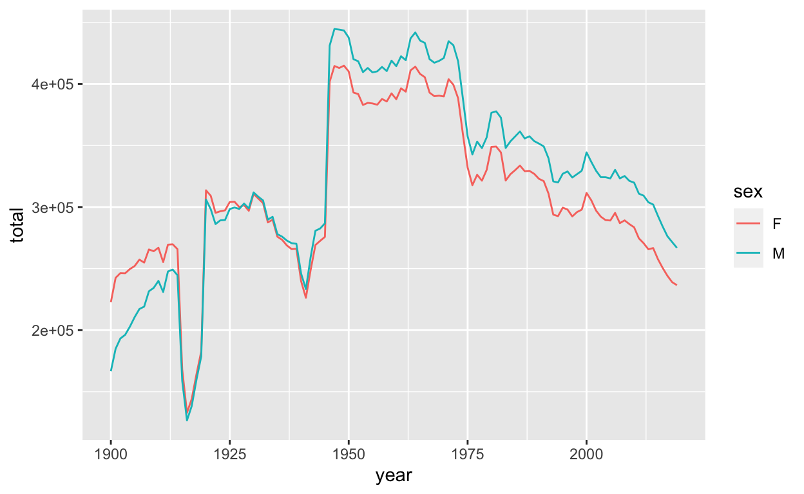

Bienvenue
Les notions apprises dans les séquences précédentes fonctionnent mieux lorsque les données sont organisées d’une manière particulière. Ce format est connu sous le nom de tidy data (ou données ordonnées). Il apparaît tout au long du tidyverse (parfois connu sous le terme d’ordocosme dans la langue de Molière). Vous passerez beaucoup de temps en tant que Data Scientist à gérer vos données dans un format utilisable. Il est donc important d’apprendre à le faire rapidement.
Ce module vous apprendra comment reconnaître les “tidy data”. Et bien sûr… comment restructurer les données dans un format bien ordonné lorsqu’elles ne le sont pas ! Dans ce document, seront abordées les principales fonctions du tidyverse :
pivot_longer()- restructure les données d’un format dit large en format dit long, etpivot_wider()- restructure les données d’un format dit long en format dit large
Nous y reviendrons par la suite, mais rappelez-vous que des données sont dites ‘dans un format long’ (long en anglais) si une même observation y apparaît plusieurs fois. Comme ici :

Au contraire, des données sont dites ‘dans un format large’ (wide en anglais) si une même observation n’y apparaît qu’une seule fois. Comme ici :

Ce module utilise les packages qui composent le coeur du tidyverse, notamment {ggplot2}, {dplyr} et {tidyr}. Nous utiliserons également le package {prenoms} made in ThinkR (voir ici pour l’installer). Tous ces packages ont été préinstallés et préchargés pour vous dans ce module. Nul besoin donc de les installer et les charger de nouveau.
Cliquez sur le bouton pour commencer.
Donnees ordonnees (tidy data)
Variables, valeurs, et observations
En analyse exploratoire de données, nous proposons trois définitions utiles pour la science des données :
Une variable est une quantité, une qualité, ou une propriété que vous pouvez mesurer.
Une valeur est l’état d’une variable quand vous la mesurez. La valeur d’une variable peut ainsi varier d’une mesure à l’autre.
Une observation est un ensemble de mesures effectuées dans des conditions similaires (vous effectuez généralement toutes les mesures sur une observation en même temps et sur le même objet). Une observation contiendra plusieurs valeurs, chacune associée à une variable différente. Nous allons parfois désigner une observation comme un cas ou un point de données.
Ces définitions sont liées au concept de tidy data (données ordonnées). Pour voir comment, appliquons les définitions à certaines données réelles.
Quiz 1 - Quelles sont les variables ?
table1Quiz 2 - Quelles sont les variables ?
Explorer maintenant ce nouveau jeu de données. Contient-il les mêmes variables que précédemment ?
table2Formes des données
Ces jeux de données révèlent quelque chose d’important : vous pouvez réorganiser le même ensemble de variables, de valeurs et d’observations de différentes manières.
Ce n’est pas difficile à faire. Si vous exécutez les blocs de code ci-dessous, vous pouvez voir les mêmes données affichées de trois autres façons.
table3table4a; table4btable5Tidy data (données ordonnées)
Les données peuvent être présentées sous différents formats, mais l’un d’entre eux est plus pertinent à utiliser pour l’analyse de données. Ce format est connu sous le nom de tidy data (ou données ordonnées). Un ensemble de données est bien ordonné si :
- Chaque variable est dans sa propre colonne
- Chaque observation est dans sa propre ligne
- Chaque valeur est dans sa propre cellule (cela découle des #1 et #2)
Parmi nos tables ci-dessus, seule table1 est bien ordonnée.
table1Extraction de variables
Pour voir pourquoi les tidy data sont plus faciles à utiliser, focalisons-nous sur une tâche de base. Chaque bloc de code ci-dessous extrait les valeurs de la variable cases sous la forme d’un vecteur et calcule la moyenne de la variable. On utilise une table bien ordonnée, table1 :
table1 %>%
summarise(moyenne = mean(cases))L’autre utilise une table désordonnée, table2:
table2 %>%
slice(c(1, 3, 5, 7, 9, 11)) %>%
summarise(moyenne = mean(count))Quelle ligne de code est la plus facile à écrire ? Et oui, la première ! C’est également la seule que vous auriez pu écrire si vous n’aviez regardé que la première ligne des données. Ce qui n’est pas le cas de la deuxième, puisque vous devez voir l’intégralité des données pour l’écrire. Pas très pratique…
Réutilisation du code
Non seulement le code de table1 est plus facile à écrire, mais il est plus facile à réutiliser. C’est-à-dire ? Pour illustrer le propos, modifiez les morceaux de code ci-dessous pour calculer la moyenne de la variable population pour chaque table.
D’abord avec table1 :
#table1 %>%
# summarise(moyenne = mean(______))table1 %>%
summarise(moyenne = mean(population))Puis avec table2 :
#table2 %>%
# slice(c(_____)) %>%
# summarise(moyenne = mean(____))table2 %>%
slice(c(2, 4, 6, 8, 10, 12)) %>%
summarise(moyenne = mean(count))Encore une fois, table1 est plus facile à travailler ; il vous suffit de changer le nom de la variable que vous souhaitez extraire. Un code comme celui-ci est plus facile à généraliser sur de nouveaux jeux de données (s’ils sont bien ordonnés) et plus facile à automatiser avec une fonction.
Regardons un avantage de plus.
Calculs
Supposons que vous souhaitiez calculer les ratios cases/population pour chaque pays et chaque année. Pour ce faire, vous devez vous assurer que la bonne valeur de cases est associée à la bonne valeur de population lorsque vous effectuez le calcul.
Une fois de plus, c’est plus compliqué à faire avec la table désordonnée table2:
table2 %>% slice(c(1, 3, 5, 7, 9, 11)) %>% select(count) / table2 %>% slice(c(2, 4, 6, 8, 10, 12)) %>% select(count)Alors que c’est beaucoup plus simple avec table1. Regardez par vous-même :
table1 %>% select(cases) / table1 %>% select(population)Ces petites différences peuvent sembler minimes ; mais lorsqu’elles s’additionnent tout au long du processus d’analyse de données, elles permettent de gagner du temps et d’éviter des erreurs.
Tidy data et R
Si le format tidy data fonctionne si bien pour R, c’est parce qu’il aligne la structure des données avec la mécanique de R :
R stocke chaque bloc de données (data.frame) sous forme d’une liste de vecteurs juxtaposés en colonnes, ce qui facilite l’extraction d’une colonne d’un data.frame en tant que vecteur. Les tidy data placent chaque variable dans son propre vecteur de colonne, ce qui facilite l’extraction de toutes les valeurs d’une variable pour calculer une statistique descriptive ou pour utiliser la variable dans un calcul.
R calcule de nombreuses fonctions et opérations de manière vectorisée : il fait correspondre les premières valeurs de chaque vecteur d’entrée pour calculer le premier résultat, puis fait correspondre les secondes valeurs de chaque entrée pour calculer le deuxième résultat, etc. Les calculs se font tere à terme. Des données bien ordonnées garantissent que R fera toujours correspondre les bonnes valeurs entre elles, dès lors que ces valeurs sont tirées de la même table.

Par conséquent, la plupart des fonctions dans R — et chaque fonction dans le tidyverse — s’attendent à ce que vos données soient organisées dans un format bien ordonné. En effet, Vous avez peut-être remarqué ci-dessus que nous pourrions utiliser les fonctions {dplyr} pour travailler sur table1, mais pas sur table2.
Résumé
“Data comes in many formats, but R prefers just one: tidy data.” - “Les données peuvent être présentées dans de nombreux formats, mais R en préfère un seul : les données ordonnées.”
— Garrett Grolemund
Un jeu de données est bien ordonné si :
- Chaque variable est dans sa propre colonne
- Chaque observation est dans sa propre ligne
- Chaque valeur est dans sa propre cellule (cela découle de #1 et #2)
Maintenant que vous savez ce que sont les tidy data, que pouvez-vous faire avec des données désordonnées ?
Dans les sections suivantes, vous allez découvrir les fonctions :
pivot_longer()- remodèle les données larges en données longues en rassemblant des colonnes, etpivot_wider()- remodèle les données longues en données larges en étendant des colonnes.
Nous y reviendrons par la suite, mais voici un aperçu du fonctionnement de ces deux fonctions :

Rassembler des colonnes
Données désordonnées (untidy data)
“Tidy data sets are all alike; but every messy data set is messy in its own way.” - “Les jeux de données tidy se ressemblent tous, mais chaque jeu de données désordonné l’est à sa manière.” — Hadley Wickham
Ainsi, la façon dont vous ordonnez un jeu de données désordonné dépendra de la configuration initiale des données. Par exemple, considérez le jeu de données cases ci-dessous.
casesQuiz 3 - Quelles sont les variables ?
Une version tidy
pivot_longer()
Vous pouvez utiliser la fonction pivot_longer() du package {tidyr} pour convertir des données larges en données longues. Attention, notez que pivot_longer() renvoie une copie ordonnée du jeu de données, mais ne modifie pas le jeu de données d’origine. Si vous souhaitez utiliser cette copie ultérieurement, vous devrez la sauvegarder quelque part en utilisant <-.
cases %>%
pivot_longer(cols = c(2, 3, 4), names_to = "year", values_to = "n")Regardons d’un peu plus près la syntaxe de pivot_longer().
Syntaxe de pivot_longer()
Voici le même code écrit sans l’opérateur pipe (%>%), ce qui rend la compréhension du bloc de code un peu plus ardue.
pivot_longer(cases, cols = c(2, 3, 4), names_to = "year", values_to = "n")Pour utiliser pivot_longer(), passez-lui en argument le nom d’un jeu de données à restructurer suivi de l’argument cols qui indique quelles colonnes utiliser pour construire les nouvelles colonnes (sous forme de nombres). Ici, pivot_longer() utilisera les deuxième, troisième et quatrième colonnes. pivot_longer() supprimera ces colonnes dans le résultat, mais leur contenu apparaîtra dans les nouvelles colonnes. Toutes les colonnes non spécifiées resteront dans le jeu de données, et leur contenu sera répété aussi souvent que nécessaire pour dupliquer chaque relation du jeu de données désordonné d’origine.
Il faut également passer à pivot_longer() les deux nouveaux noms de colonne à utiliser. Chaque nom doit être une chaîne de caractères entourée de guillemets :
names_to: chaîne de caractères qui deviendra le nom de la nouvelle colonne qui contiendra les anciens noms de colonne.values_to: chaîne de caractères qui deviendra le nom de la nouvelle colonne contenant les anciennes valeurs contenues dans les cellules.
Exercice 1 - Ordonner table4a
Maintenant que vous avez vu pivot_longer() en action, essayez de l’utiliser pour ordonner table4a :
table4aLe résultat devrait contenir trois colonnes : country, year, et cases. Commencez par modifier le code ci-dessous.
#table4a %>%
# pivot_longer(cols = c(____ ), names_to = "___", values_to = "____")table4a %>%
pivot_longer(cols = c(2, 3), names_to = "year", values_to = "cases")Spécification des colonnes
Jusqu’à présent, nous avons utilisé des nombres pour décrire les colonnes à restructurer avec pivot_longer(), mais ce n’est pas nécessaire. pivot_longer() reconnaît également les noms de colonnes ainsi que tous les outils select() dont vous avez entendu parler dans Isoler les données avec {dplyr}. Ainsi, par exemple, ces expressions feraient toutes la même chose :
table4a %>%
pivot_longer(cols = c(2, 3), names_to = "year", values_to = "cases")
table4a %>%
pivot_longer(cols = c(`1999`, `2000`), names_to = "year", values_to = "cases")
table4a %>%
pivot_longer(cols = -country, names_to = "year", values_to = "cases")
table4a %>%
pivot_longer(cols = one_of(c("1999", "2000")), names_to = "year", values_to = "cases")Notez que 1999 et 2000 sont des nombres. Lorsque vous appelez directement des noms de colonnes qui sont des nombres, vous devez les entourer de guillemets. Sinon pivot_longer() penserait que vous voulez dire les 1999ème et 2000ème colonnes… Utilisez ?select_helpers pour ouvrir une page d’aide qui répertorie les outils select().
Exercice 2 - Ordonner table4b
Utilisez pivot_longer() et l’outil - pour ordonner table4b en un jeu de données avec trois colonnes : country, year, et population.
table4btable4b %>%
pivot_longer(cols = -country, names_to = "year", values_to = "population")Conversion de types de données
Si vous avez examiné de près vos résultats des exercices précédents, vous avez peut-être remarqué quelque chose d’étrange : la nouvelle colonne year contient des vecteurs de caractères. Vous pouvez le savoir car R affiche <chr> sous le nom de la colonne.
Vous pouvez demander à R de convertir chaque nouvelle colonne en un type de données approprié en utilisant l’argument names_ptypes à l’appel pivot_longer(). Cet argument doit être renseigné sous la forme names_ptypes = list(year = integer()). R transformera le contenu de la colonne year en entiers (integer). Essayez-le dans le code ci-dessus !
table4b %>%
pivot_longer(cols = -country, names_to = "year", values_to = "population")table4b %>%
pivot_longer(cols = -country, names_to = "year", values_to = "population", names_ptypes = list(year = integer()))Flexibilité de pivot_longer()
cases, table4a, et table4b sont toutes des tables rectangulaires :
- chaque ligne correspond à la valeur d’une variable, et
- chaque colonne correspond à la valeur d’une variable
Les tables rectangulaires sont une forme simple de données étendues. Mais vous rencontrerez également des exemples plus complexes de données étendues. Par exemple, il est courant que les chercheurs placent un sujet par ligne. Dans ce cas, vous pouvez voir plusieurs colonnes d’informations d’identification suivies d’un ensemble de colonnes qui répertorient les mesures répétées de la même variable. cases2 représente un tel ensemble de données.
cases2Pour ordonner ces données, vous souhaitez conserver les trois premières colonnes telles quelles. Pouvez-vous ordonner ces données avec pivot_longer() ? Oui, vous savez déjà comment. Réfléchissez au problème, puis rangez cases2 dans un jeu de données à cinq colonnes : city, country, continent, year et cases.
cases2 %>%
pivot_longer(cols = c(4, 5, 6), names_to = "year", values_to = "cases")Etendre des colonnes
Données étroites
Le jeu de données pollution ci-dessous affiche la quantité de petites et grandes particules dans l’air de trois villes. Il illustre un autre type courant de données désordonnées. Les données étroites (ou narrow data) utilisent une colonne contenant des noms de variables et une colonne contenant les valeurs associées à ces variables pour stocker plusieurs variables. Pouvez-vous dire ici laquelle est laquelle ?
pollutionQuiz 4 - Quelle colonne contient les noms des variables ?
pollutionQuiz 5 - Quelle colonne contient les valeurs ?
pollutionUne version tidy
pivot_wider()
Vous pouvez “étendre” les noms des variables sur leur propre ensemble de colonnes avec la fonction pivot_wider() du package {tidyr}.
Pour utiliser pivot_wider(), passez-lui le nom d’un ensemble de données à étendre (fourni ici par le pipe %>%). Indiquez ensuite à pivot_wider() quelle colonne contient les noms des variables et quelle colonne contient les valeurs associées à ces variables.
pollution %>%
pivot_wider(names_from = size, values_from = amount)pivot_wider() donnera à chaque valeur unique de la colonne names_from sa propre colonne. Le nom de la valeur deviendra le nom de la colonne. pivot_wider() redistribuera ensuite les valeurs de la colonne values_from à travers les nouvelles colonnes d’une manière qui préserve chaque relation dans le jeu de données d’origine.
Exercice 3 - Ordonner table2
Utilisez pivot_wider() pour ordonner table2 en un jeu de données avec quatre colonnes : country, year, cases, et population. En d’autres termes, convertissez table2 pour qu’il ressemble à table1.
table2table2 %>%
pivot_wider(names_from = type, values_from = count)Utiliser des guillemets ou non
Vous remarquerez peut-être que pivot_longer() et pivot_wider() prennent tous les deux des arguments names_ et values_. Et, dans cas cas-là, les arguments sont définis sur des noms de colonnes. Mais dans pivot_longer() vous devez entourer les noms avec des guillemets et dans le cas de pivot_wider() vous ne le faites pas. Pourquoi ?
table4b %>%
pivot_longer(cols = -country, names_to = "year", values_to = "population")
pollution %>%
pivot_wider(names_from = size, value = amount)Ne laissez pas la différence vous piéger. Pensez plutôt à la signification des guillemets.
Dans R, tout “mot” entouré de guillemets est une chaîne de caractères, c’est une donnée en soi.
Par contre, tout “mot” non entouré de guillemets est le nom d’un objet, qui contient ou pointe vers une donnée. Chaque fois que R évalue un nom d’objet, il recherche l’objet pour trouver les données qu’il contient. Si l’objet n’existe pas quelque part, R retournera une erreur.
Guillemets pivot_longer() & pivot_wider()
Dans notre code pivot_longer() ci-dessus, “year” et “population” font référence à deux colonnes qui n’existent pas encore dans les données. Si R essayait de rechercher des objets nommés year et population, il ne les trouverait pas (du moins pas dans le jeu de données table4b). Lorsque nous utilisons pivot_longer() nous passons à R deux valeurs (chaînes de caractères) à utiliser comme noms des futures colonnes qui apparaîtront dans le résultat.
Dans notre code pivot_wider(), names_from et values_from pointent vers deux colonnes qui existent dans le jeu de données pollution : size et amount. Lorsque nous utilisons pivot_wider(), nous demandons à R de trouver ces objets (colonnes) dans le jeu de données et d’utiliser leur contenu pour créer le résultat. Puisqu’ils existent, nous n’avons pas besoin de les entourer de guillemets.
En pratique, l’utilisation ou non de guillemets dépendra de la façon dont l’auteur de la fonction l’a écrite (par exemple, pivot_wider() fonctionnera quand même si vous incluez des guillemets). Cependant, vous pouvez utiliser l’intuition ci-dessus comme guide pour savoir comment utiliser les guillemets dans le tidyverse.
Filles et garçons dans le jeu de données prenoms
Appliquons pivot_wider() à des données réelles. Le graphique ci-dessous visualise un aspect du jeu de données prenoms du package prenoms.

Le ratio filles/garçons dans prenoms n’est pas le même en fonction du temps. Nous pouvons explorer ce phénomène d’un peu plus près en recréant les données utilisées pour la création du graphique.
Créer les données
## `summarise()` has grouped output by 'year'. You can override using the `.groups`
## argument.
Pour créer les données affichées sur le graphique ci-dessus, nous avons d’abord groupé les prénoms par year et sex. Ensuite, nous avons calculé un résumé pour chaque groupe : total, qui est égal à la somme de n pour chaque groupe. Nous avons ainsi calculé le nombre total de garçons et le nombre total de filles nés chaque année.
Utilisez les fonctions de {dplyr} pour récréer ce processus :
prenoms %>%
group_by(year, sex) %>%
summarise(total = sum(n))Construire le graphique

Utilisez les données ci-dessous pour construire le graphique (qui a été créé avec les fonctions {ggplot2}).
prenoms %>%
group_by(year, sex) %>%
summarise(total = sum(n))prenoms %>%
group_by(year, sex) %>%
summarise(total = sum(n)) %>%
ggplot() +
aes(year, n, color = sex)+
geom_line()Une meilleure façon de regarder les données
Une meilleure façon d’explorer ce phénomène serait de tracer directement un ratio garçons/filles dans le temps. Pour construire un tel graphique, vous avez d’abord besoin de calculer le ratio garçons/filles pour chaque année de 1900 à 2018 :
\[\text{ratio} = \frac{\text{total garçons (M)}}{\text{total filles (F)}}\]
Mais comment pouvons-nous tracer ces données ? Notre version actuelle de prenoms indique le nombre total de garçons et de filles pour chaque année dans la même colonne, ce qui rend difficile l’utilisation des deux totaux dans le même calcul.
prenoms %>%
group_by(year, sex) %>%
summarise(total = sum(n))But
Il serait plus facile de calculer le ratio garçons/filles si nous pouvions restructurer nos données dans l’objectif d’avoir le nombre total de garçons nés par an dans une colonne et le nombre total de filles nées par an dans une autre :
Ensuite, nous pourrions calculer le ratio en utilisant nos données dans mutate(ratio = M / F).
Exercice 4 - Construire le graphique
Transformer le code ci-dessous pour :
Restructurer la disposition des données pour placer le nombre total de garçons par an dans une colonne et le nombre total de filles nées par an dans une deuxième colonne.
Calculer le ratio garçons/filles.
Afficher sur le graphique le ratio garçons/filles au cours du temps.
prenoms %>%
group_by(year, sex) %>%
summarise(total = sum(n))prenoms %>%
group_by(year, sex) %>%
summarise(total = sum(n)) %>%
pivot_wider(names_from = sex, values_from = total) %>%
mutate(ratio = M / F) %>%
ggplot() +
aes(year, ratio) +
geom_line()Récapitulatif
Vos données seront plus faciles à utiliser dans R si vous les restructurez sous un format tidy au début de votre analyse. Les données sont tidy (ordonnées) si :
- Chaque variable est dans sa propre colonne
- Chaque observation est dans sa propre ligne
- Chaque valeur est dans sa propre cellule
Vous pouvez utiliser pivot_longer() et pivot_wider(), ou une séquence itérative des deux, pour restructurer vos données dans n’importe quelle configuration possible qui :
Conserve toutes les valeurs de votre jeu de données d’origine, et
Conserve toutes les relations entre les valeurs de votre jeu de données d’origine.
En particulier, vous pouvez utiliser ces fonctions pour refondre vos données dans un format ordonné.
Matière à réflexion
Il n’est pas toujours facile de déterminer si un jeu de données est tidy ou non. Par exemple, la version de prenoms qui était tidy quand nous voulions tracer le nombre total d’enfants par année, ne l’était plus quand nous avons voulu calculer le rapport garçons/filles.
L’ambiguïté vient de la définition des données ordonnées. La notion d’ordre dépend des variables de votre jeu de données. Mais la variable dépend de ce que vous essayez de faire.
Petit conseil : Pour identifier les variables avec lesquelles vous devez travailler, décrivez ce que vous voulez faire avec une équation. Chaque variable de l’équation doit correspondre à une variable dans vos données.
Ainsi, dans notre premier cas, nous voulions faire un tracé avec les paramètres suivants :
\[x = year\] \[y = total\] \[color = sex\]
Pour faire cela, nous avions besoin d’un jeu de données avec les variables \(year\), \(total\), et \(sex\) dans leur propre colonne.
Dans le second cas, nous voulions calculer le \(ratio\), où
\[\text{ratio} = \frac{\text{total M}}{\text{total F}}\] Cette formule a trois variables : ratio, total M, et total F. Pour créer la première variable, nous avions besoin d’un jeu de données qui isolait la deuxième et la troisième variable (total M et total F) dans leur propre colonne.